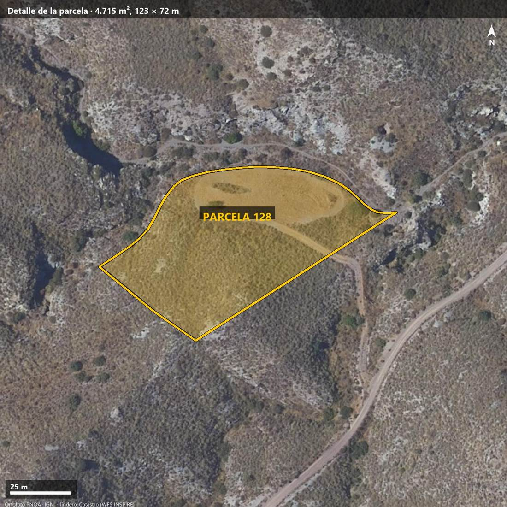
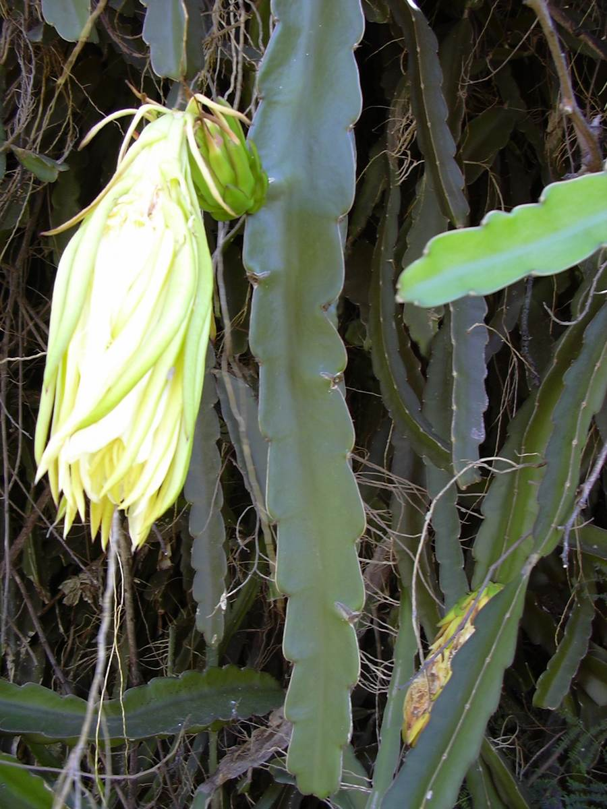
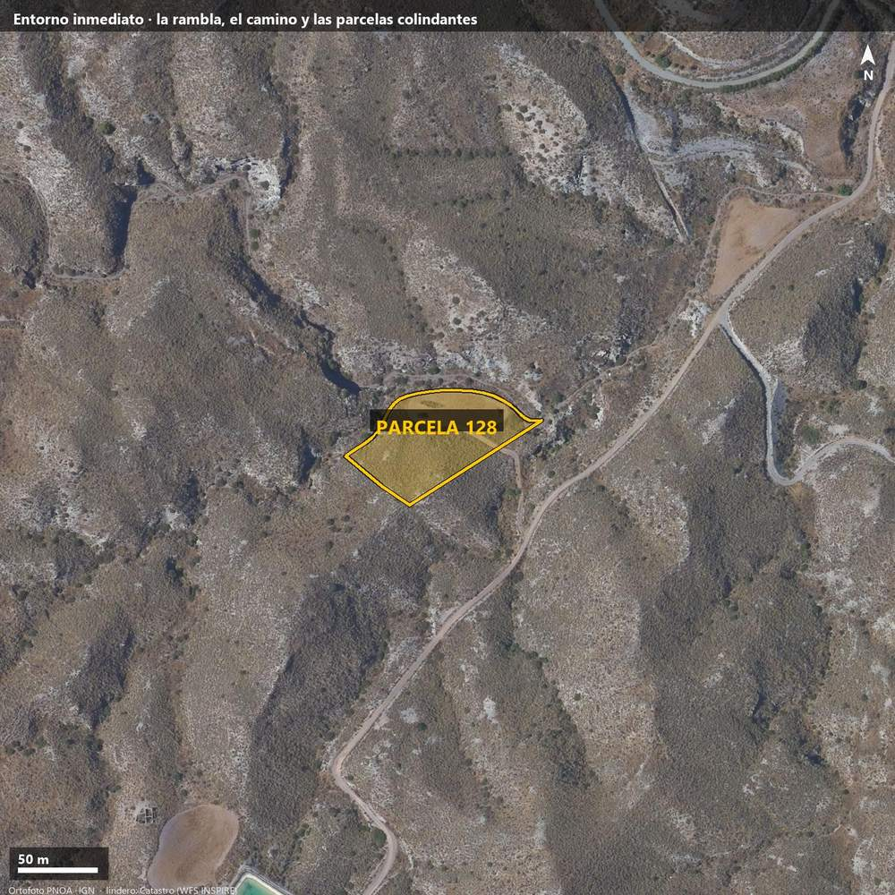
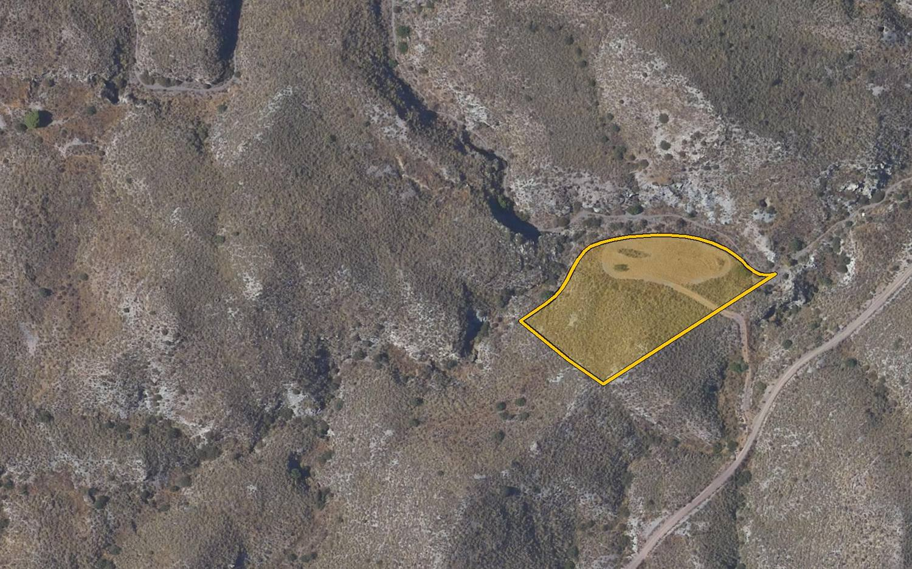
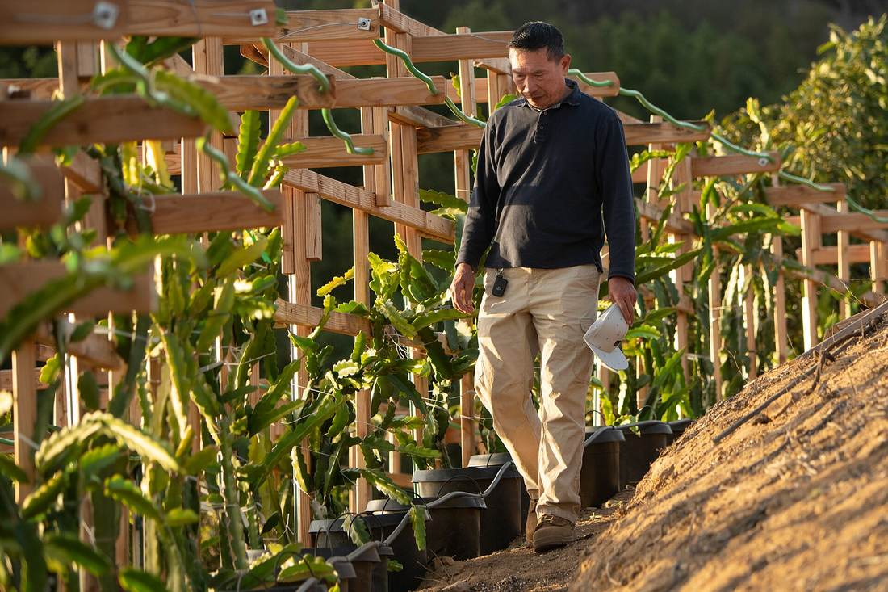
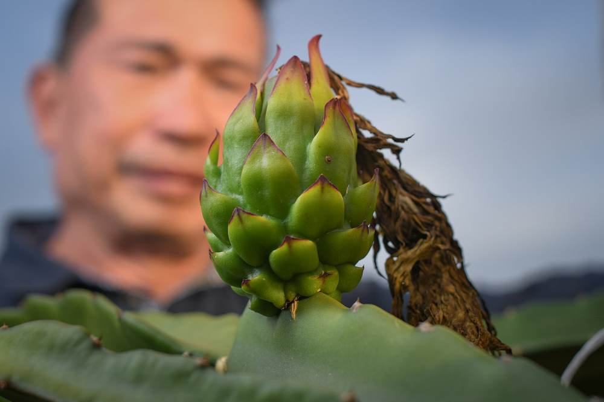
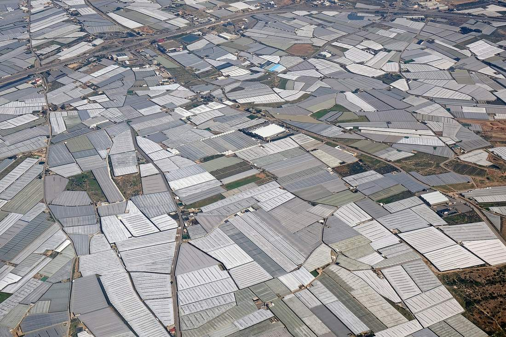
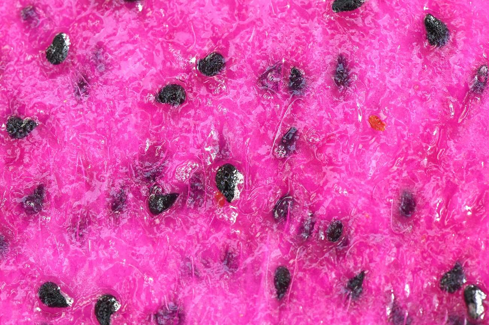
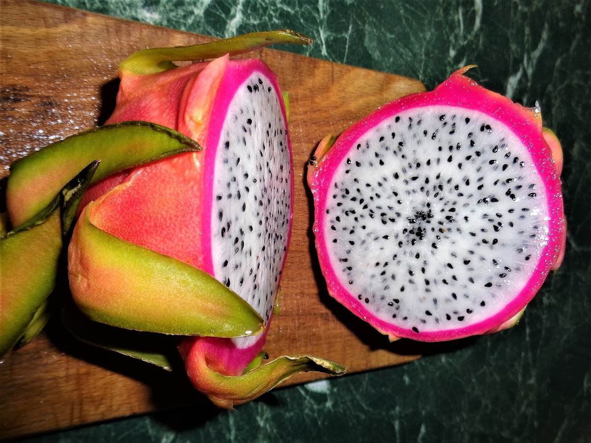
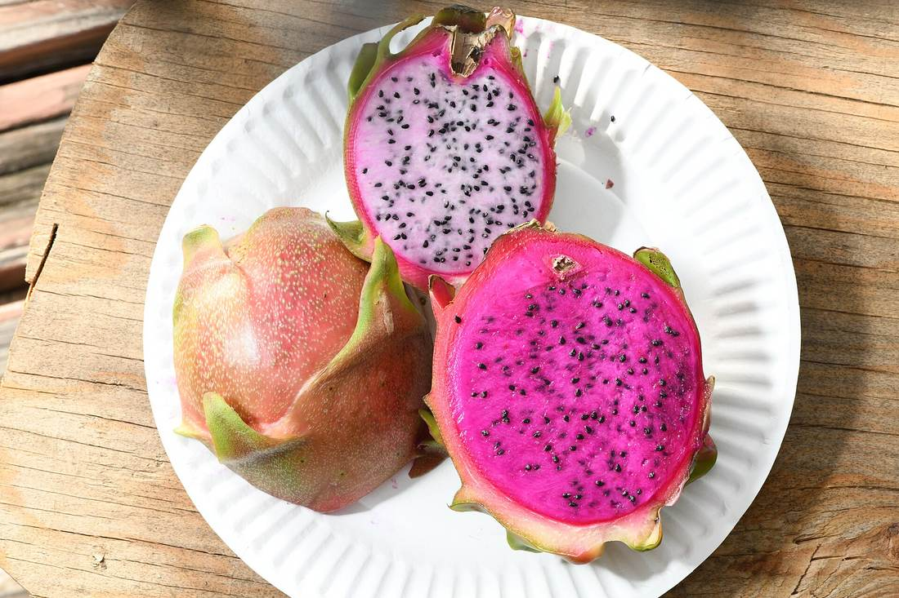

Rambla de las Vacas · Cuevas del Almanzora · 37,33 N — 1,73 W
4.715 m² dormidos en la Sierra Castillarico. Un estudio completo dice que pueden despertar.



Veinte años
de pastos.
Cero euros.catastro: «E — pastos · intensidad 00»
Aquí el invierno
no existe.0,1 días de helada al año · 100 horas frío
Y 20.000 m³ de agua
pasan de largo
cada año.rambla contigua · 69,4 ha de cuenca
Hasta
ahora.

de pendiente. Prácticamente llana.
La llave de los cultivos subtropicales.
La rambla mueve veinte veces lo que el cultivo bebe.
al mar. Y media hora de la costa turística.
El cultivo elegido entre siete
PitayaUn cactus que bebe como un cactus y cobra como una fruta premium: 4–5 € el kilo en origen. Sin frío que necesitar. Sin sed que pagar.


Se planta una vez.
Da fruta 25 años.1.600 plantas en espaldera · 2.000 m²
Cada flor abre
una sola noche.se poliniza a mano · 74 horas al año
Y el sexto año
la finca está en plena forma.a cuánto asciende la cosecha — sigue bajando
Malla de sombreo
86 mil €
Invernadero
117 mil €
Cuesta 30.600 € más y gana en todo. La Junta lo dice sin rodeos: en Almería, invernadero.




Los gastos se cubren
a 1,70 €/kg.hoy pagan entre 4 y 5
Madura en agosto.
La costa, llena.Vera · Mojácar · Garrucha · San Juan de los Terreros
Venta directa:
7 €/kg.fruterías y restaurantes a media hora
Cada una tiene un antídoto barato. Ninguna se arregla ignorándola.
Comprobarlo todo cuesta menos de 1.000 €. La obra, 86.000–117.000. Ese es el orden correcto.